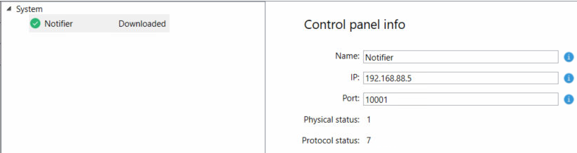

Connect the Configurator Tool to the Adapter
- In the Notifier AM configurator tool page, click Go online.
- In the Connect to Adapter dialog box, do the following:
a. In the IP field, enter the IP address of the machine hosting the adapter.
b. In the Port field, enter 50000 (default communication TCP port).
c. Click Connect. - Click Yes to overwrite the local configuration.
- Click Yes to override the existing active configuration.
- If the connection is established successfully, the adapter status is
 (
(Connected). Under System on the left, the default branch (Notifier) is displayed and its status is (Connected).
NOTE: If the adapter status is (Offline), check the configuration settings and try again to establish a connection.
